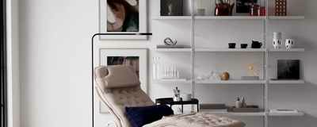
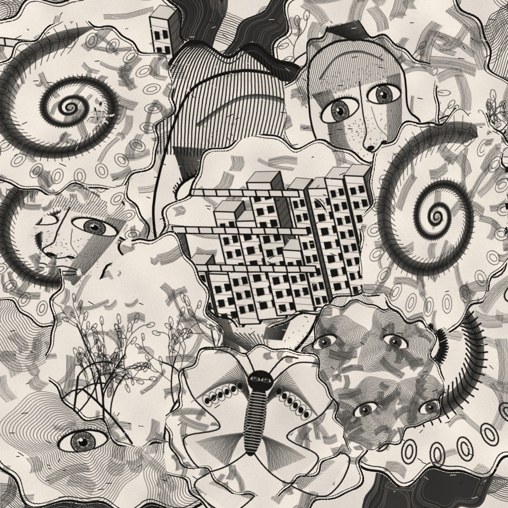

Research / moving image / interactive systems
Experiments.
A growing archive of visual systems, moving-image studies and interactive worlds. Each experiment opens independently, so the rest of the lab stays out of the way.

01 / Spatial videoOpen ↗
4D Splat Studio

02 / Interactive spaceOpen ↗
Room / 001

03 / Artificial lifeOpen ↗
Anima / 001

04 / Computational drawingOpen ↗
Palimpsest / 001

05 / Moving pigmentOpen ↗